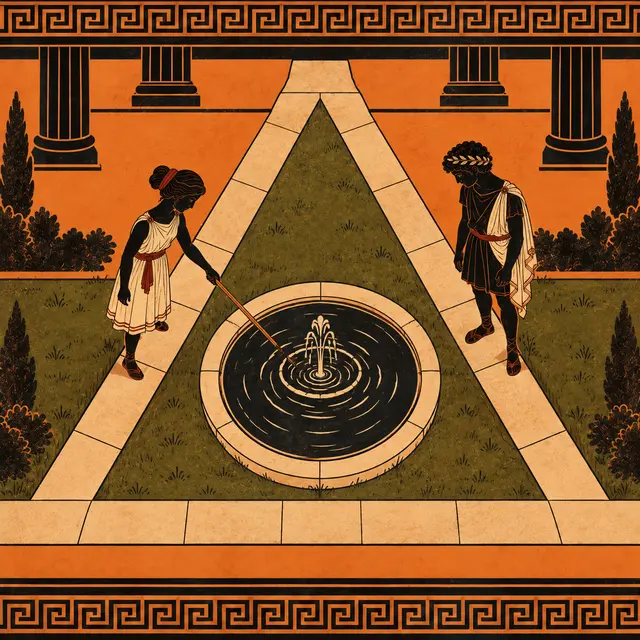
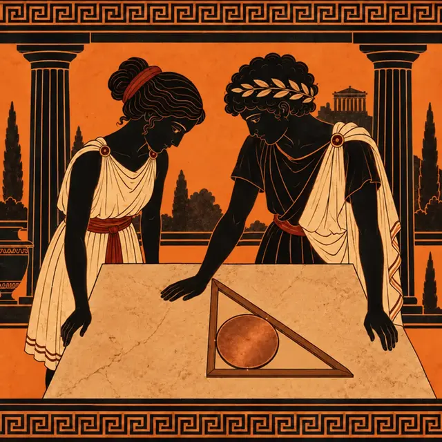

課前暖身漫畫：營火要放在哪裡？
學院的戶外課，三頂帳篷搭在空地上，營火要離三頂帳篷一樣遠。阿基想用眼睛估「正中間」，小歐卻拿出繩子和木樁：先找離兩頂帳篷一樣遠的那條線，再找另一條——兩條線的交點，就是這一節的第一個主角外心。
重點 1：外心——三邊中垂線的交點
重點整理與敘述
- 回顧中垂線：點在 \(\overline{AB}\) 的中垂線上 \(\Rightarrow\) 它到 \(A\)、\(B\) 等距（性質）；反過來，到 \(A\)、\(B\) 等距的點一定在 \(\overline{AB}\) 的中垂線上（判別性質）。
- 設 \(\overline{AB}\)、\(\overline{BC}\) 的中垂線交於 \(O\)：
- \(O\) 在 \(\overline{AB}\) 的中垂線上，\(\overline{OA} = \overline{OB}\)；
- \(O\) 在 \(\overline{BC}\) 的中垂線上，\(\overline{OB} = \overline{OC}\)；
- 所以 \(\overline{OA} = \overline{OC}\)，\(O\) 也在 \(\overline{AC}\) 的中垂線上。
- 三條中垂線交於一點 \(O\)，叫做三角形的外心：\(\overline{OA} = \overline{OB} = \overline{OC}\)。
- 以 \(O\) 為圓心、\(\overline{OA}\) 為半徑畫圓，圓通過三個頂點，叫做外接圓；外心就是外接圓的圓心。
- 尺規作圖：只要作出兩邊的中垂線，交點就是外心。
- 例：\(O\) 是外心，\(\overline{OA} = 2x + 1\)、\(\overline{OB} = 5x - 8\)，由 \(2x + 1 = 5x - 8\) 得 \(x = 3\)，\(\overline{OC} = 7\)。
視覺互動探索：尺規找外心
選一個三角形，按「下一步」用圓規和直尺作兩條中垂線，看它們交在哪裡；最後畫出外接圓，量一量 \(\overline{OA}\)、\(\overline{OB}\)、\(\overline{OC}\)。
形成性評量 (外心)
Q1. \(O\) 點為 \(\triangle ABC\) 的外心，若 \(\overline{OA} = 4x - 3\)、\(\overline{OC} = 2x + 9\)，則 \(\overline{OB}\) 的長度為多少？
解析：答案為 B。外心到三頂點等距，\(\overline{OA} = \overline{OB} = \overline{OC}\)：
\[\begin{aligned} & 4x - 3 = 2x + 9 \\ & 2x = 12,\; x = 6 \end{aligned}\]
\(\overline{OB} = \overline{OC} = 2 \times 6 + 9 = 21\)。
A 錯：\(6\) 是 \(x\)，題目問的是長度。
D 錯：\(42\) 是外接圓的直徑。
Q2. 下列關於三角形外心的敘述，何者正確？
解析：答案為 C。兩條中垂線的交點到三頂點都等距，第三條中垂線也一定通過它。
A 錯：三內角平分線的交點是內心。
B 錯：外心是到三頂點等距，不是到三邊。
D 錯：鈍角三角形的外心在外部、直角三角形的外心在斜邊中點。
重點 2：銳角、直角、鈍角三角形的外心位置
重點整理與敘述
- 每一個三角形都有外心，而且只有一個。它在哪裡，由最大的那個角決定：
- 銳角三角形：外心在三角形內部。
- 直角三角形：外心在斜邊的中點。
- 鈍角三角形：外心在三角形外部，和鈍角頂點分在鈍角對邊的兩側。
- 反過來，外心落在某一邊上，那一邊就是外接圓的直徑，它所對的角是直角。
- 例：三內角是 \(40^\circ\)、\(60^\circ\)、\(80^\circ\)，最大角是銳角，外心在內部。
視覺互動探索：拖曳頂點看外心
拖曳 \(A\)、\(B\)、\(C\)（頂點會吸到格點上），或按上方按鈕換成銳角、直角、鈍角三角形。外心 \(O\) 什麼時候跑出三角形？什麼時候剛好落在邊上？
形成性評量 (外心的位置)
Q3. \(\triangle ABC\) 的外心 \(O\) 恰好落在 \(\overline{BC}\) 上，下列敘述何者正確？
解析：答案為 A。\(O\) 在 \(\overline{BC}\) 上且 \(\overline{OB} = \overline{OC}\)，\(O\) 是 \(\overline{BC}\) 的中點，\(\overline{BC}\) 是外接圓的直徑，所以它對的 \(\angle A\) 是直角。
B 錯：\(B\) 是斜邊的端點，不是直角頂點。
C、D 錯：鈍角三角形的外心在外部、銳角三角形的外心在內部，都不會落在邊上。
Q4. 某三角形三個內角的度數比為 \(2 : 3 : 7\)，它的外心在哪裡？
解析：答案為 C。三內角分別是
\[\begin{aligned} & 180^\circ \times \frac{2}{12} = 30^\circ \\ & 180^\circ \times \frac{3}{12} = 45^\circ \\ & 180^\circ \times \frac{7}{12} = 105^\circ \end{aligned}\]
最大角是鈍角，所以是鈍角三角形，外心在外部。
B 錯：外心在斜邊中點的是直角三角形。
重點 3：直角三角形的外接圓半徑＝斜邊的一半
重點整理與敘述
- 直角三角形的斜邊是外接圓的直徑，外心 \(O\) 是斜邊的中點。
- 所以外接圓半徑 \(R = \frac{1}{2} \times\) 斜邊。
- \(\overline{OC}\) 也是半徑：直角頂點到斜邊中點的距離（斜邊上的中線）也等於斜邊的一半。
- 例：\(\angle C = 90^\circ\)、\(\overline{AC} = 15\)、\(\overline{BC} = 8\)： \[\begin{aligned} & \overline{AB} = \sqrt{15^2 + 8^2} = 17 \\ & R = \frac{17}{2} \end{aligned}\]
- 已知外接圓半徑，也可以倒推斜邊 \(= 2R\)，再用畢氏定理求另一股。
視覺互動探索：斜邊就是直徑
調整兩股 \(\overline{BC}\)、\(\overline{AC}\) 的長，看外心是不是一直在斜邊中點、外接圓半徑是不是一直等於斜邊的一半。
形成性評量 (直角三角形的外接圓)
Q5. 直角 \(\triangle ABC\) 中，\(\angle C = 90^\circ\)，\(\overline{AC} = 12\)、\(\overline{BC} = 5\)，則它的外接圓半徑為多少？
解析：答案為 D。
\[\overline{AB} = \sqrt{12^2 + 5^2} = 13\]
外心是斜邊中點，半徑 \(= \frac{1}{2} \times 13 = \frac{13}{2}\)。
A 錯：\(13\) 是直徑（斜邊）。
B 錯：\(6\) 是 \(\overline{AC}\) 的一半，不是斜邊的一半。
C 錯：把兩股相加再除以 \(2\)，沒有先算斜邊。
Q6. 直角 \(\triangle ABC\) 中，\(\angle C = 90^\circ\)，\(O\) 為外心。若 \(\overline{OC} = \frac{41}{2}\)、\(\overline{BC} = 9\)，則 \(\overline{AC}\) 的長度為多少？
解析：答案為 A。外心到三頂點等距，\(\overline{OA} = \overline{OB} = \overline{OC} = \frac{41}{2}\)，斜邊 \(\overline{AB} = 41\)：
\[\begin{aligned} & \overline{AC} = \sqrt{41^2 - 9^2} \\ &= \sqrt{1600} = 40 \end{aligned}\]
B 錯：\(41\) 是斜邊。
C 錯：\(41 - 9 = 32\)，邊長不能直接相減。
重點 4：外心與角度——\(\angle BOC\) 和 \(\angle A\)
重點整理與敘述
- 以外心 \(O\) 為圓心作外接圓：\(\angle BOC\) 是圓心角、\(\angle A\) 是圓周角，圓周角是它所對弧的度數的一半。
- \(\angle A\) 是銳角：\(\angle A\) 和 \(\angle BOC\) 對同一段弧 \(\overset{\frown}{BC}\)， \[\angle BOC = 2\angle A\]
- \(\angle A\) 是鈍角：\(\angle A\) 對的是另一段弧，外心在外部， \[\angle BOC = 360^\circ - 2\angle A\]
- \(\angle A\) 是直角：\(O\) 在 \(\overline{BC}\) 上，\(\angle BOC = 180^\circ\)。
- 例：\(\angle A = 52^\circ\) 時 \(\angle BOC = 104^\circ\)；\(\angle A = 118^\circ\) 時 \(\angle BOC = 360^\circ - 236^\circ = 124^\circ\)。
- 反求要小心：只知道 \(\angle BOC\) 時，\(\angle A\) 可能是 \(\frac{1}{2}\angle BOC\)，也可能是 \(180^\circ - \frac{1}{2}\angle BOC\)。
視覺互動探索：圓心角與圓周角
調整 \(\angle BOC\)，再把 \(A\) 沿著圓移動：\(A\) 在上方的優弧時，\(\angle A\) 會變嗎？切到「\(A\) 在劣弧上」，\(\angle A\) 和 \(\angle BOC\) 的關係變成什麼？
形成性評量 (外心與角度)
Q7. 銳角 \(\triangle ABC\) 中，\(O\) 點為外心。若 \(\angle BAC = 63^\circ\)，則 \(\angle BOC\) 的度數為何？
解析：答案為 B。銳角三角形中，\(\angle BOC\) 是 \(\overset{\frown}{BC}\) 的圓心角、\(\angle BAC\) 是圓周角：\(\angle BOC = 2 \times 63^\circ = 126^\circ\)。
A 錯：\(90^\circ + \frac{1}{2} \times 63^\circ = 121.5^\circ\) 是內心的 \(\angle BIC\)。
D 錯：\(234^\circ = 360^\circ - 126^\circ\)，是另一側的角，不是 \(\triangle BOC\) 的內角。
Q8. \(O\) 點為 \(\triangle ABC\) 的外心。若 \(\angle BOC = 138^\circ\)，則 \(\angle BAC\) 的度數為何？
解析：答案為 D。題目沒有說 \(\angle BAC\) 是銳角還是鈍角，兩種都要考慮。
若 \(\angle BAC\) 是銳角：\(\angle BAC = \frac{1}{2} \times 138^\circ = 69^\circ\)。
若 \(\angle BAC\) 是鈍角：\(\angle BAC = 180^\circ - 69^\circ = 111^\circ\)。
C 錯：\(42^\circ = 180^\circ - 138^\circ\)，不是圓心角與圓周角的關係。
重點 5：等腰三角形的外接圓半徑——設 \(r\) 列方程式
重點整理與敘述
- \(\overline{AB} = \overline{AC}\) 時，\(A\) 和外心 \(O\) 都在底邊 \(\overline{BC}\) 的中垂線上，所以 \(O\) 落在底邊上的高 \(\overline{AM}\)（或它的延長線）上，\(M\) 是 \(\overline{BC}\) 的中點。
- 設外接圓半徑 \(\overline{OA} = \overline{OB} = r\)，在直角 \(\triangle OBM\) 用畢氏定理列方程式。
- 頂角是銳角，\(O\) 在 \(\overline{AM}\) 上：\(\overline{OM} = \overline{AM} - r\)；頂角是鈍角，\(O\) 在 \(\overline{BC}\) 下方：\(\overline{OM} = r - \overline{AM}\)。兩種平方後是同一條方程式。
- 例：\(\overline{AB} = \overline{AC} = 10\)、\(\overline{BC} = 16\)，則 \(\overline{BM} = 8\)、\(\overline{AM} = \sqrt{10^2 - 8^2} = 6\)： \[\begin{aligned} & r^2 = (r - 6)^2 + 8^2 \\ & 12r = 100 \\ & r = \frac{25}{3} \end{aligned}\]
視覺互動探索：山牆的外接圓
調整半底 \(\overline{BM}\) 和高 \(\overline{AM}\)。外心 \(O\) 什麼時候在高上、什麼時候跑到底邊下方？看畫面上的方程式怎麼列、怎麼解。
形成性評量 (等腰三角形的外接圓)
Q9. 等腰 \(\triangle ABC\) 中，\(\overline{AB} = \overline{AC} = 17\)、\(\overline{BC} = 30\)，則它的外接圓半徑為多少？
解析：答案為 A。\(\overline{BM} = 15\)、\(\overline{AM} = \sqrt{17^2 - 15^2} = 8\)。頂角是鈍角，外心在 \(\overline{BC}\) 下方，\(\overline{OM} = r - 8\)：
\[\begin{aligned} & r^2 = (r - 8)^2 + 15^2 \\ & 16r = 289 \\ & r = \frac{289}{16} \end{aligned}\]
B 錯：「半徑＝斜邊的一半」只適用於直角三角形。
C 錯：\(15\) 是半底 \(\overline{BM}\)。
Q10. 等腰 \(\triangle ABC\) 中，\(\overline{AB} = \overline{AC} = 25\)、\(\overline{BC} = 48\)。設它的外接圓半徑為 \(r\)，下列哪一條方程式可以求出 \(r\)？
解析：答案為 B。\(\overline{BM} = 24\)、\(\overline{AM} = \sqrt{25^2 - 24^2} = 7\)。外心在底邊的中垂線上，\(\overline{OM} = r - 7\)，而 \((r - 7)^2 = (7 - r)^2\)，在 \(\triangle OBM\) 中 \(r^2 = (7 - r)^2 + 24^2\)。
A 錯：\(O\) 和 \(A\) 在同一條線上，\(\overline{OM}\) 是兩段相減，不是相加。
C 錯：直角 \(\triangle OBM\) 的股是半底 \(24\)。
D 錯：\(25\) 是腰長，不是高。
重點 6：內心——三內角平分線的交點
重點整理與敘述
- 回顧角平分線：角平分線上的點到角的兩邊等距（性質）；到角的兩邊等距的點一定在角平分線上（判別性質）。
- 設 \(\angle A\)、\(\angle C\) 的平分線交於 \(I\)，從 \(I\) 作三邊的垂線，垂足 \(P\)、\(Q\)、\(R\) 分別在 \(\overline{AB}\)、\(\overline{BC}\)、\(\overline{CA}\) 上：
- \(I\) 在 \(\angle A\) 的平分線上，\(\overline{IP} = \overline{IR}\)；
- \(I\) 在 \(\angle C\) 的平分線上，\(\overline{IQ} = \overline{IR}\)；
- 所以 \(\overline{IP} = \overline{IQ}\)，\(I\) 也在 \(\angle B\) 的平分線上。
- 三條內角平分線交於一點 \(I\)，叫做內心：\(I\) 到三邊的距離相等。
- 以 \(I\) 為圓心、\(\overline{IP}\) 為半徑畫圓，和三邊都相切，叫做內切圓。
- 不管銳角、直角或鈍角三角形，內心一定在三角形內部。
- 尺規作圖：作兩個角的平分線，交點就是內心。

視覺互動探索：尺規找內心
選一個三角形，按「下一步」作 \(\angle A\)、\(\angle B\) 的平分線，再從交點作三邊的垂線、畫出內切圓。換成鈍角三角形，內心還在裡面嗎？
形成性評量 (內心)
Q11. \(I\) 點為 \(\triangle ABC\) 的內心，下列敘述何者正確？
解析：答案為 C。內心到三邊等距，這個距離當半徑畫圓，圓和三邊各只碰一點，就是內切圓。
A、B 錯：那是外心的性質。
D 錯：在斜邊中點的是直角三角形的外心；內心一定在內部。
Q12. 下列哪一種三角形，內心可能在三角形的外部？
解析：答案為 D。三條內角平分線都從頂點往三角形裡面走，交點一定在內部。
A 錯：會跑到外部的是鈍角三角形的外心，不是內心。
重點 7：到三「點」等距，還是到三「線」等距？
重點整理與敘述
- 先看題目要「誰」等距：
- 到三個點（帳篷、村莊、頂點）等距 → 中垂線 → 外心。
- 到三條線（道路、牆、邊）等距 → 角平分線 → 內心。
- 外心到三邊的距離一般不相等；內心到三頂點的距離一般也不相等。同一個三角形的外心和內心，通常不是同一點。
- 圓心到圓上每一點等距，但到不同長度的弦，距離（弦心距）不相等：弦愈長、弦心距愈短。
- 例：營地裡三頂帳篷，營火要離三頂帳篷一樣遠 → 外心；三條路圍成的公園，遊戲場要離三條路一樣遠 → 內心。
視覺互動探索：帳篷還是道路？
拖曳金色的點 \(P\)。先看「到三頂點」的三段距離，找出讓它們一樣長的位置；再切到「到三邊」重找一次。兩次找到的是同一點嗎？
形成性評量 (外心還是內心)
Q13. 某公園被三條筆直的步道圍成三角形，管理處要在公園裡蓋一座涼亭，讓涼亭到三條步道的距離都相等。涼亭應該蓋在哪裡？
解析：答案為 B。要等距的是三條線（步道），到兩條線等距的點在角平分線上，三條角平分線的交點是內心。
A 錯：中垂線的交點（外心）是到三個頂點等距。
C 錯：中線的交點是重心，不保證到三邊等距。
Q14. 圓形廣場中有三條長度都不相同的弦 \(\overline{AB}\)、\(\overline{CD}\)、\(\overline{EF}\)，延長三弦會兩兩相交圍成 \(\triangle MNP\)。若要找一點到三條弦所在直線的距離都相等（點在 \(\triangle MNP\) 內），應該取哪一點？
解析：答案為 C。三條弦所在的直線就是 \(\triangle MNP\) 的三邊，到三邊等距的點是內心。
A 錯：三條弦長度不同，圓心到它們的距離（弦心距）也不同；圓心到圓上的點等距，不是到弦等距。
B 錯：外心是到 \(M\)、\(N\)、\(P\) 三個點等距。
重點 8：內心與角度——\(\angle BIC = 90^\circ + \frac{1}{2}\angle A\)
重點整理與敘述
- \(I\) 是內心，\(\overline{BI}\)、\(\overline{CI}\) 分別平分 \(\angle B\)、\(\angle C\)：\(\angle IBC = \frac{1}{2}\angle B\)、\(\angle ICB = \frac{1}{2}\angle C\)。
- 在 \(\triangle IBC\) 中： \[\begin{aligned} & \angle BIC \\ &= 180^\circ - \frac{1}{2}(\angle B + \angle C) \\ &= 180^\circ - \frac{1}{2}(180^\circ - \angle A) \\ &= 90^\circ + \frac{1}{2}\angle A \end{aligned}\]
- 所以 \(\angle BIC\) 一定比 \(90^\circ\) 大。
- 例：\(\angle A = 70^\circ\)，\(\angle BIC = 90^\circ + 35^\circ = 125^\circ\)。反求：\(\angle BIC = 116^\circ\)，則 \(\frac{1}{2}\angle A = 26^\circ\)，\(\angle A = 52^\circ\)。
- 別和外心搞混：外心是 \(\angle BOC = 2\angle A\)（銳角時）。
視覺互動探索：∠BIC 量角器
調整 \(\angle B\)、\(\angle C\)，看 \(\angle BIC\) 怎麼由兩個「半角」算出來，再和 \(90^\circ + \frac{1}{2}\angle A\) 比一比。
形成性評量 (內心與角度)
Q15. \(I\) 點為 \(\triangle ABC\) 的內心。若 \(\angle A = 64^\circ\)，則 \(\angle BIC\) 的度數為何？
解析：答案為 A。\(\angle BIC = 90^\circ + \frac{1}{2} \times 64^\circ = 122^\circ\)。
B 錯：\(2 \times 64^\circ = 128^\circ\) 是銳角三角形外心的 \(\angle BOC\)。
D 錯：\(180^\circ - 32^\circ = 148^\circ\)，把 \(\frac{1}{2}\angle A\) 當成了 \(\angle IBC + \angle ICB\)。
Q16. \(I\) 點為 \(\triangle ABC\) 的內心。若 \(\angle BIC = 133^\circ\)，則 \(\angle A\) 的度數為何？
解析：答案為 D。\(133^\circ = 90^\circ + \frac{1}{2}\angle A\)，\(\frac{1}{2}\angle A = 43^\circ\)，\(\angle A = 86^\circ\)。
A 錯：\(43^\circ\) 只是 \(\angle A\) 的一半。
B 錯：把 \(\angle BIC\) 直接除以 \(2\)，那是外心的關係。
C 錯：\(180^\circ - 133^\circ = 47^\circ\) 是 \(\angle IBC + \angle ICB\)。
重點 9：內心分出的三塊面積比＝邊長比
重點整理與敘述
- 連接 \(\overline{IA}\)、\(\overline{IB}\)、\(\overline{IC}\)，把 \(\triangle ABC\) 分成三塊。內心到三邊等距，三塊的高都是內切圓半徑 \(r\)。
- 高相同，面積比就是底的比： \[\begin{aligned} & \triangle AIB : \triangle BIC : \triangle CIA \\ &= \overline{AB} : \overline{BC} : \overline{CA} \end{aligned}\]
- 要求其中一塊，就把全面積照邊長比例分配。
- 同樣的道理也適用於一條角平分線：\(\overline{BD}\) 平分 \(\angle B\) 時，\(D\) 到 \(\overline{BA}\)、\(\overline{BC}\) 等距，\(\triangle ABD : \triangle CBD = \overline{AB} : \overline{BC}\)。
- 例：\(\overline{AB} = 7\)、\(\overline{BC} = 8\)、\(\overline{CA} = 9\)，則三塊面積比是 \(7 : 8 : 9\)。
視覺互動探索：三塊面積的比
調整三邊的長。三塊三角形的高都是 \(r\)，面積比會跟著邊長比一起變嗎？
形成性評量 (內心與面積比)
Q17. 直角 \(\triangle ABC\) 中，\(\angle C = 90^\circ\)，\(\overline{AC} = 20\)、\(\overline{BC} = 21\)，\(I\) 點為內心，則 \(\triangle ABI\) 的面積為多少？
解析：答案為 C。\(\overline{AB} = \sqrt{20^2 + 21^2} = 29\)，\(\triangle ABC\) 面積 \(= \frac{1}{2} \times 20 \times 21 = 210\)。三塊面積比 \(= 29 : 21 : 20\)：
\[\triangle ABI = 210 \times \frac{29}{70} = 87\]
A、B 錯：\(60\)、\(63\) 分別是 \(\triangle CIA\)、\(\triangle BIC\)。
D 錯：\(105\) 是全面積的一半。
Q18. \(I\) 點為 \(\triangle ABC\) 的內心，\(\triangle AIB : \triangle BIC\)
解析：答案為 B。三塊的高都是 \(r\)，面積比就是 \(\overline{AB} : \overline{BC} : \overline{CA} = 7 : 8 : 13\)：
\[\overline{CA} = 56 \times \frac{13}{28} = 26\]
A 錯：\(16\) 是 \(\overline{BC}\)。
C 錯：\(14\) 是 \(\overline{AB}\)。
D 錯：\(28\) 是比的總份數，不是邊長。
重點 10：三角形面積＝\(\frac{1}{2}\) × 內切圓半徑 × 周長
重點整理與敘述
- 設內切圓半徑 \(r\)、周長 \(s\)。三塊三角形的高都是 \(r\)，底加起來就是周長： \[\begin{aligned} & \triangle ABC \\ &= \frac{1}{2}r\,\overline{AB} + \frac{1}{2}r\,\overline{BC} \\ &\quad + \frac{1}{2}r\,\overline{CA} \\ &= \frac{1}{2}rs \end{aligned}\]
- 三個量知道兩個，就能求第三個：\(r = 2 \times\) 面積 \(\div\, s\)、\(s = 2 \times\) 面積 \(\div\, r\)。
- 求內切圓半徑的常見流程：先用畢氏定理求高 → 算面積 → 算周長 → \(r = 2 \times\) 面積 \(\div\) 周長。
- 例：三邊 \(13\)、\(14\)、\(15\)，面積 \(84\)、周長 \(42\)，\(84 = \frac{1}{2} \times r \times 42\)，\(r = 4\)。
視覺互動探索：把三塊攤平
選一個三角形。上面是內心切出的三塊，下面把三塊的底接成一列——總長是周長、高都是 \(r\)。面積公式就是這樣來的。
形成性評量 (面積與內切圓半徑)
Q19. 某三角形的面積為 \(105\)，內切圓半徑為 \(3.5\)，則這個三角形的周長為多少？
解析：答案為 B。\(105 = \frac{1}{2} \times 3.5 \times s\)，\(s = 105 \times 2 \div 3.5 = 60\)。
A 錯：漏了 \(\frac{1}{2}\)，算成 \(105 \div 3.5\)。
C 錯：把面積和半徑相乘。
Q20. 等腰 \(\triangle ABC\) 中，\(\overline{AB} = \overline{AC} = 17\)、\(\overline{BC} = 16\)，則它的內切圓半徑為多少？
解析：答案為 A。底邊上的高 \(= \sqrt{17^2 - 8^2} = 15\)，面積 \(= \frac{1}{2} \times 16 \times 15 = 120\)，周長 \(= 50\)：
\[120 = \frac{1}{2} \times r \times 50,\quad r = \frac{24}{5}\]
B 錯：\(\frac{15}{2}\) 是高的一半。
D 錯：漏了 \(\frac{1}{2}\) 的那個 \(2\)，算成 \(120 \div 50\)。
重點 11：直角三角形的內切圓半徑
重點整理與敘述
- \(\angle C = 90^\circ\)，內切圓切三邊於 \(P\)、\(Q\)、\(R\)。四邊形 \(CPIQ\) 三個角是直角、\(\overline{IP} = \overline{IQ} = r\)，是邊長 \(r\) 的正方形。
- 圓外一點到圓的兩條切線段等長：\(\overline{AP} = \overline{AR}\)、\(\overline{BQ} = \overline{BR}\)。
- 所以 \[\begin{aligned} & \overline{AC} + \overline{BC} \\ &= \overline{AR} + \overline{BR} + 2r \\ &= \overline{AB} + 2r \end{aligned}\] 移項得 \[r = \frac{\text{兩股和} - \text{斜邊}}{2}\]
- 例：兩股 \(9\)、\(12\)，斜邊 \(15\)，\(r = \frac{9 + 12 - 15}{2} = 3\)。也可以用 \(\frac{1}{2}rs\) 驗算：\(54 = \frac{1}{2} \times 3 \times 36\)。
- 這條公式只適用於直角三角形。

視覺互動探索：切線段接龍
調整兩股的長。金色兩段一樣長、藍色兩段一樣長，綠色正方形的邊長是 \(r\)：兩股加起來，比斜邊多了多少？
形成性評量 (直角三角形的內切圓)
Q21. 直角 \(\triangle ABC\) 中，\(\angle B = 90^\circ\)，\(\overline{AB} = 12\)、\(\overline{AC} = 37\)，則它的內切圓半徑為多少？
解析：答案為 D。\(\overline{BC} = \sqrt{37^2 - 12^2} = 35\)：
\[r = \frac{12 + 35 - 37}{2} = 5\]
A 錯：忘了除以 \(2\)。
B 錯：\(\frac{37}{2}\) 是外接圓半徑。
Q22. 某直角三角形的斜邊長 \(25\)，內切圓半徑為 \(3\)，則這個直角三角形的周長為多少？
解析：答案為 C。兩股和 \(=\) 斜邊 \(+ 2r = 25 + 6 = 31\)，周長 \(= 31 + 25 = 56\)。
A 錯：\(31\) 只是兩股和，還要加上斜邊。
B 錯：把兩股和算成 \(25 + 3\)，漏了 \(2r\) 的 \(2\)。
重點 12：過內心作平行線——小三角形的周長
重點整理與敘述
- \(I\) 是內心，過 \(I\) 作 \(\overline{DE} \parallel \overline{BC}\)，\(D\) 在 \(\overline{AB}\) 上、\(E\) 在 \(\overline{AC}\) 上。
- \(\overline{BI}\) 平分 \(\angle B\)：\(\angle DBI = \angle IBC\)；\(\overline{DE} \parallel \overline{BC}\)：\(\angle DIB = \angle IBC\)（內錯角）。
- 所以 \(\angle DBI = \angle DIB\)，\(\triangle DBI\) 是等腰三角形，\(\overline{DB} = \overline{DI}\)；同理 \(\overline{EC} = \overline{EI}\)。
- 小三角形的周長把 \(\overline{DI}\)、\(\overline{IE}\) 換掉： \[\begin{aligned} & \overline{AD} + \overline{DE} + \overline{EA} \\ &= \overline{AD} + \overline{DB} + \overline{EC} + \overline{EA} \\ &= \overline{AB} + \overline{AC} \end{aligned}\]
- 例：\(\overline{AB} = 9\)、\(\overline{AC} = 8\)，\(\triangle ADE\) 的周長 \(= 17\)，和 \(\overline{BC}\) 多長無關。
視覺互動探索：等腰三角形藏在哪
拖曳 \(A\)、\(B\)、\(C\)，或換一條要平行的邊。金色兩段一樣長、藍色兩段一樣長，紫色小三角形的周長永遠等於哪兩邊的和？
形成性評量 (內心與平行線)
Q23. 如圖，\(I\) 點為 \(\triangle ABC\) 的內心，過 \(I\) 作 \(\overline{DE} \parallel \overline{BC}\)，分別交 \(\overline{AB}\)、\(\overline{AC}\) 於 \(D\)、\(E\)。若 \(\overline{AB} = 11\)、\(\overline{AC} = 13\)、\(\overline{BC} = 16\)，則 \(\triangle ADE\) 的周長為多少？
解析：答案為 B。\(\overline{DB} = \overline{DI}\)、\(\overline{EC} = \overline{EI}\)，所以 \(\triangle ADE\) 的周長 \(= \overline{AB} + \overline{AC} = 11 + 13 = 24\)。
A、C 錯：用到了 \(\overline{BC}\)；小三角形的周長和平行的那一邊 \(\overline{BC}\) 無關。
D 錯：\(40\) 是 \(\triangle ABC\) 的周長。
Q24. 承上題的圖，為什麼 \(\overline{DB} = \overline{DI}\)？
解析：答案為 A。\(\overline{BI}\) 平分 \(\angle B\) 得 \(\angle DBI = \angle IBC\)；\(\overline{DE} \parallel \overline{BC}\) 得 \(\angle DIB = \angle IBC\)（內錯角）。兩底角相等，所以 \(\overline{DB} = \overline{DI}\)。
B 錯：這句話對，但它說的是 \(I\) 到兩條邊的距離，推不出 \(\overline{DB} = \overline{DI}\)。
C 錯：\(D\) 一般不是中點（這裡 \(\overline{DE}\) 通過內心，不是中點連線）。
重點 13：重心——三條中線的交點
重點整理與敘述
- 物體的重量可以看成集中在一點，叫做重心；在重心往上施力，物體就能平衡不動。
- 把均勻的三角形紙板從頂點 \(A\) 吊起來，靜止後畫出過 \(A\) 的鉛垂線，它會通過對邊 \(\overline{BC}\) 的中點。
- 三角形的頂點和對邊中點的連線叫做中線。三條中線交於一點 \(G\)，就是三角形的重心。
- 尺規作圖：作兩邊的中垂線找出中點，再連出兩條中線，交點就是重心。（中垂線只用來找中點，重心不是中垂線的交點。）
- 不管銳角、直角或鈍角三角形，重心一定在三角形內部。
視覺互動探索：吊起紙板找重心
「懸吊」：依序吊起不同的頂點，看鉛垂線（紅色虛線）通過對邊的哪一點；畫兩條就找到重心。「尺規」：按步驟用圓規和直尺作兩條中線。
形成性評量 (重心)
Q25. 下列哪一種線段，三條一定都會通過三角形的重心？
解析：答案為 D。頂點與對邊中點的連線是中線，三條中線交於重心。
A 錯：中垂線交於外心。
B 錯：角平分線交於內心。
C 錯：高一般不通過對邊中點，不會通過重心。
Q26. 下列關於三角形三心的敘述，何者正確？
解析：答案為 B。內心、重心一定在內部；外心在銳角三角形內部、直角三角形斜邊中點、鈍角三角形外部。
A 錯：鈍角三角形的外心在外部。
C 錯：到三頂點等距的是外心；重心到三頂點的距離一般不相等。
D 錯：重心是三中線的交點。
重點 14：重心把中線分成 \(2 : 1\)
重點整理與敘述
- \(G\) 是重心，\(\overline{AD}\)、\(\overline{BE}\)、\(\overline{CF}\) 是中線：
- \(\overline{AG} : \overline{GD} = 2 : 1\)，\(\overline{BG} : \overline{GE} = 2 : 1\)，\(\overline{CG} : \overline{GF} = 2 : 1\)；
- \(\overline{AG} = \frac{2}{3}\overline{AD}\)、\(\overline{GD} = \frac{1}{3}\overline{AD}\)，其他兩條同理。
- 理由：連接 \(\overline{DE}\)，兩邊中點連線 \(\overline{DE} \parallel \overline{AB}\) 且 \(\overline{DE} = \frac{1}{2}\overline{AB}\)；內錯角相等，\(\triangle DEG \sim \triangle ABG\)（AA），所以 \(\overline{GD} : \overline{AG} = 1 : 2\)。
- 注意：\(\overline{AG}\)、\(\overline{BG}\)、\(\overline{CG}\) 三段一般不相等（三條中線本來就不一樣長）。
- 例：\(\overline{AD} = 15\)，則 \(\overline{AG} = 10\)、\(\overline{GD} = 5\)。
視覺互動探索：中線上的 2 : 1
拖曳頂點、換一條中線，比較金色（頂點到重心）和橘色（重心到中點）兩段；按「看理由」看相似三角形。
形成性評量 (重心與中線)
Q27. \(\triangle ABC\) 的三中線 \(\overline{AD}\)、\(\overline{BE}\)、\(\overline{CF}\) 交於 \(G\) 點。若 \(\overline{AD} = 24\)、\(\overline{BE} = 21\)、\(\overline{CF} = 30\)，則 \(\overline{GD} + \overline{GE} + \overline{GF}\) 為多少？
解析：答案為 A。重心到對邊中點是中線的 \(\frac{1}{3}\)：
\[\frac{1}{3}(24 + 21 + 30) = 25\]
B 錯：\(50\) 是 \(\overline{AG} + \overline{BG} + \overline{CG}\)。
D 錯：把重心當成中線的中點，算成一半。
Q28. \(G\) 點為 \(\triangle ABC\) 的重心，\(\overline{AD}\) 是中線。若 \(\overline{AG} = 4x - 2\)、\(\overline{GD} = x + 3\)，則 \(\overline{AD}\) 的長度為多少？
解析：答案為 C。\(\overline{AG} = 2\overline{GD}\)：
\[\begin{aligned} & 4x - 2 = 2(x + 3) \\ & 2x = 8,\; x = 4 \end{aligned}\]
\(\overline{AG} = 14\)、\(\overline{GD} = 7\)，\(\overline{AD} = 21\)。
A、B 錯：只算了 \(\overline{AG}\) 或 \(\overline{GD}\)。
重點 15：重心把面積三等分、三中線把面積六等分
重點整理與敘述
- 中線把三角形分成等底同高的兩半，面積相等。
- \(\overline{CF}\) 是中線：\(\triangle ACF = \triangle BCF\)、\(\triangle AGF = \triangle BGF\)，相減得 \(\triangle ACG = \triangle BCG\)。同理可得： \[\begin{aligned} & \triangle GAB = \triangle GBC \\ &= \triangle GCA = \frac{1}{3}\triangle ABC \end{aligned}\]
- 每一塊再被中線切成一半：三條中線把面積六等分，每塊都是 \(\frac{1}{6}\triangle ABC\)，形狀不同也一樣大。
- 由幾塊拼成的圖形，就數它占了幾個 \(\frac{1}{6}\)：例如四邊形 \(AFGE\) 是兩塊，\(= \frac{1}{3}\triangle ABC\)。
- 例：\(\triangle ABC\) 面積 \(36\)，則 \(\triangle GAB = 12\)、\(\triangle GBD = 6\)、四邊形 \(AFGE = 12\)。
視覺互動探索：每一塊一樣大
拖曳頂點（吸在格點上），切換「三等分」「六等分」「四邊形 \(AFGE\)」。每一塊中央的數字是它的面積（方格），形狀再怎麼歪，數字都一樣嗎？
形成性評量 (重心與面積)
Q29. \(G\) 點為 \(\triangle ABC\) 的重心，\(D\)、\(E\)、\(F\) 分別是 \(\overline{BC}\)、\(\overline{CA}\)、\(\overline{AB}\) 的中點。若 \(\triangle GBD\) 的面積為 \(15\)，則四邊形 \(AFGE\) 的面積為多少？
解析：答案為 D。三中線把面積六等分，每一塊都是 \(15\)；四邊形 \(AFGE\) 由 \(\triangle GAF\)、\(\triangle GAE\) 兩塊組成，面積 \(= 2 \times 15 = 30\)。
A 錯：四邊形是兩塊，不是一塊。
B 錯：\(45\) 是三塊，是 \(\triangle ABC\) 的一半。
Q30. 直角 \(\triangle ABC\) 中，\(\angle A = 90^\circ\)，\(\overline{AB} = 14\)、\(\overline{AC} = 15\)。\(D\)、\(E\) 分別是 \(\overline{AB}\)、\(\overline{AC}\) 的中點，\(\overline{CD}\) 與 \(\overline{BE}\) 交於 \(P\)，則四邊形 \(ADPE\) 的面積為多少？
解析：答案為 C。\(\overline{CD}\)、\(\overline{BE}\) 是兩條中線，\(P\) 是重心。\(\triangle ABC\) 面積 \(= \frac{1}{2} \times 14 \times 15 = 105\)，四邊形 \(ADPE\) 是六塊中的兩塊：
\[105 \times \frac{2}{6} = 35\]
A 錯：只算了一塊。
D 錯：\(52.5\) 是全面積的一半。
重點 16：藏在平行四邊形裡的重心
重點整理與敘述
- 平行四邊形 \(ABCD\) 的對角線互相平分，交點 \(O\) 是 \(\overline{AC}\)、\(\overline{BD}\) 的中點。
- \(E\) 是 \(\overline{BC}\) 的中點時，在 \(\triangle ABC\) 裡 \(\overline{AE}\)、\(\overline{BO}\) 都是中線，交點 \(G\) 是 \(\triangle ABC\) 的重心：
- \(\overline{BG} = 2\overline{GO}\)，\(\overline{BO} = 3\overline{GO}\)，\(\overline{BD} = 6\overline{GO}\)；
- \(\triangle AGO = \frac{1}{6}\triangle ABC = \frac{1}{12}\) 平行四邊形 \(ABCD\)。
- \(E\) 換成 \(\overline{CD}\) 的中點，\(G\) 就是 \(\triangle ACD\) 的重心，作法相同。
- 關鍵是先找出「藏起來的三角形」與它的兩條中線，再套重心性質。
- 例：\(\overline{OG} = 3\)，則 \(\overline{BG} = 6\)、\(\overline{BO} = 9\)、\(\overline{BD} = 18\)。
視覺互動探索：找出藏起來的三角形
調整平行四邊形的底、傾斜與高，切換 \(E\) 的位置。金色三角形就是 \(G\) 當重心的那一個；藍色與橘色兩段的比，是不是一直 \(2 : 1\)？
形成性評量 (平行四邊形與重心)
Q31. 如圖，平行四邊形 \(ABCD\) 的兩對角線交於 \(O\) 點，\(E\) 是 \(\overline{BC}\) 的中點，\(\overline{AE}\) 與 \(\overline{BD}\) 交於 \(G\) 點。若 \(\overline{OG} = 7\)，則 \(\overline{BD}\) 的長度為多少？
解析：答案為 D。對角線互相平分，\(O\) 是 \(\overline{AC}\) 的中點，\(G\) 是 \(\triangle ABC\) 的重心：\(\overline{BG} = 2 \times 7 = 14\)、\(\overline{BO} = 21\)，\(\overline{BD} = 2 \times 21 = 42\)。
A 錯：\(21\) 只是 \(\overline{BO}\)。
B 錯：把 \(\overline{BD}\) 當成 \(\overline{BG}\) 的兩倍。
Q32. 平行四邊形 \(ABCD\) 的兩對角線交於 \(O\) 點，\(E\) 是 \(\overline{BC}\) 的中點，\(\overline{AE}\) 與 \(\overline{BD}\) 交於 \(G\) 點。若 \(\triangle ABG\) 的面積為 \(10\)，則平行四邊形 \(ABCD\) 的面積為多少？
解析：答案為 C。\(G\) 是 \(\triangle ABC\) 的重心，\(\triangle ABG = \frac{1}{3}\triangle ABC\)，所以 \(\triangle ABC = 30\)；平行四邊形是 \(\triangle ABC\) 的兩倍，面積 \(= 60\)。
A 錯：\(30\) 只是 \(\triangle ABC\)。
D 錯：把 \(\triangle ABG\) 當成六等分中的一小塊。
重點 17：直角三角形——外心接重心
重點整理與敘述
- 直角 \(\triangle ABC\)（\(\angle B = 90^\circ\)）的外心是斜邊中點 \(E\)：\(\overline{EA} = \overline{EB} = \overline{EC} = \frac{1}{2}\overline{AC}\)。
- \(\overline{BE}\) 也是斜邊上的中線，重心 \(G\) 在它上面，\(\overline{BG} : \overline{GE} = 2 : 1\)： \[\begin{aligned} \overline{BG} &= \frac{2}{3}\overline{BE} = \frac{1}{3}\overline{AC} \\ \overline{GE} &= \frac{1}{3}\overline{BE} = \frac{1}{6}\overline{AC} \end{aligned}\]
- 兩個性質接力：先用外心把 \(\overline{BE}\) 換成斜邊的一半，再用重心的 \(2 : 1\)。
- 題目若說「\(\overline{AB}\) 是圓的直徑、\(C\) 在圓上」，\(\angle C\) 就是直角，圓心是斜邊中點，同樣可以接力。
- 例：\(\overline{AC} = 18\)，則 \(\overline{BE} = 9\)、\(\overline{BG} = 6\)、\(\overline{GE} = 3\)。
視覺互動探索：斜邊的 ½、⅓、⅙
調整兩股的長。斜邊中點 \(E\) 是外心，金色 \(\overline{BG}\) 和橘色 \(\overline{GE}\) 各是斜邊的幾分之幾？
形成性評量 (直角三角形的重心與外心)
Q33. \(G\) 點為直角 \(\triangle ABC\) 的重心，\(\angle B = 90^\circ\)，\(\overline{BG}\) 的延長線交 \(\overline{AC}\) 於 \(E\) 點。若 \(\overline{BG} = 14\)，則斜邊 \(\overline{AC}\) 的長度為多少？
解析：答案為 A。\(E\) 是 \(\overline{AC}\) 的中點，\(\overline{BE}\) 是中線：\(\overline{BE} = \frac{3}{2} \times 14 = 21\)。\(E\) 也是外心，\(\overline{AC} = 2\overline{BE} = 42\)。
B 錯：\(21\) 是 \(\overline{BE}\)。
C 錯：把 \(\overline{BG}\) 直接乘以 \(2\)，忘了重心分中線是 \(2 : 1\)。
Q34. 如圖，\(\overline{AB}\) 是圓 \(O\) 的直徑，\(C\) 點在圓上，\(D\)、\(E\) 分別是 \(\overline{AC}\)、\(\overline{BC}\) 的中點，\(\overline{AE}\) 與 \(\overline{BD}\) 交於 \(G\) 點。若圓 \(O\) 的面積為 \(48\pi\)，則 \(\overline{OG}\) 的長度為多少？
解析：答案為 A。\(G\) 是 \(\triangle ABC\) 的重心；\(O\) 是 \(\overline{AB}\) 的中點，\(\overline{CO}\) 是第三條中線，延長 \(\overline{OG}\) 會通過 \(C\)。半徑 \(\overline{OC} = \sqrt{48} = 4\sqrt{3}\)：
\[\overline{OG} = \frac{1}{3}\overline{OC} = \frac{4\sqrt{3}}{3}\]
B 錯：\(\frac{8\sqrt{3}}{3}\) 是 \(\overline{CG}\)。
C 錯：\(4\sqrt{3}\) 是半徑。
D 錯：把 \(G\) 當成 \(\overline{OC}\) 的中點。
小節總結與核心回顧
三心速查表
- 外心 \(O\)：三邊中垂線的交點；\(\overline{OA} = \overline{OB} = \overline{OC}\)（外接圓半徑）；銳角在內、直角在斜邊中點、鈍角在外；銳角時 \(\angle BOC = 2\angle A\)。
- 內心 \(I\)：三內角平分線的交點；到三邊等距（內切圓半徑 \(r\)）；一定在內部；\(\angle BIC = 90^\circ + \frac{1}{2}\angle A\)。
- 內心與面積：三塊面積比＝邊長比；面積 \(= \frac{1}{2}rs\)；直角三角形的 \(r =\)（兩股和 \(-\) 斜邊）\(\div 2\)。
- 重心 \(G\)：三中線的交點；一定在內部；分中線 \(2 : 1\)；連三頂點面積三等分、三中線面積六等分。
- 判斷用哪一心：到三點等距 → 外心；到三線等距 → 內心；平衡、中線、中點 → 重心。
回到幾何學院：三個問題、三個點
營火放哪裡
離三頂帳篷一樣遠——作兩條中垂線，交點就是外心；以它為圓心畫圓，三頂帳篷都在圓上。
遊戲場放哪裡
離三條路一樣遠——作兩條角平分線，交點就是內心；以它為圓心的圓剛好碰到三條路。
木板吊在哪裡會平衡
吊起兩個頂點畫出兩條鉛垂線，它們都是中線，交點就是重心：用一根手指頂住它，三角形木板就能水平地停住。